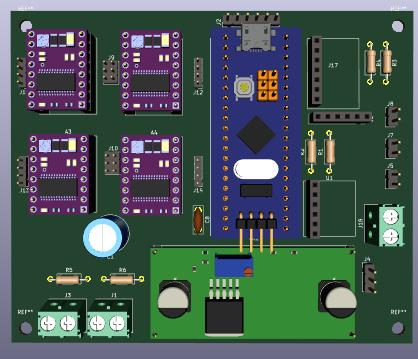

Definição dos Subsistemas
|
Logo nas primeiras etapas do projeto foi construída uma PBS (quadro de estrutura do projeto) contendo todos os subsistemas essências e quais componentes fariam parte de cada um deles. A imagem abaixo mostra essa estrutura, dividida entre: Alimentação, Percepção, Processamento, Atuação e Monitoramento.
|

Simulação

O ROS é um framework que possui uma série de ferramentas úteis para o desenvolvimento de robôs. Por exemplo, ele é capaz de simplificar para o usuário o processo de comunicação dos diferentes componentes de um robô, tais como os motores, sensores, baterias e o software através de um sistema baseado em tópicos e mensagens.
O ROS foi adotado como ferramenta neste projeto para a realização das simulação e implementação da lógica do robô por ser um projeto open-source, que possui diversos pacotes já desenvolvidos, suporta de forma nativa as lingugens de programação C++ e Python e também por poder ser carregado diretamente em sistemas embarcados, tal como a Raspberry Pi 4, o controlador que funcionará como o “cérebro” do robô.
Uma grande vantagem da simulação é que podem ser construídos ambientes virtuais complexos semelhantes aos hospitais reais, que seriam de difícil acesso para todos os testes necessários ao longo do projeto. Além disso, falhas podem ser identificadas e melhorias implementadas sem a necessidade de estar com o robô em mãos ou da construção de um campo de trainamento.
Atualmente estamos desenvolvendo a teleoperação, que será usada para fins de testes no robô após a sua montagem, a navegação autônoma e a integração com os sensores que serão usados durante a triagem.

A imagem acima mostra o ambiente de simulação Gazebo com o robô implementado por meio do ROS. Note que foi utilizado um robô retangular genérico apenas para fins de desenvolvimento das funções e que posteriormente será subistituído pelo CAD construído pela equipe.
O uso de rodas omnidirecionais foi adotado para permitir ao robô maior liberdade de movimento, possibilitando inclusive movimentos diagonais, sem a necessidade de rotação ao redor do próprio eixo. A imagem abaixo apresenta um esquema sobre a relação vetorial ligada à este movimento
Descrição da cinemática do movimento omnidirecional (Fonte: TAHERI, H.; QIAO, B.; GHAEMINEZHAD, N. 2015).

Eletrônica
KiCad é um programa computacional de código aberto para projeto eletrônico assistido por computador, com o objetivo de facilitar a concepção de layouts e suas conversões para placas de circuito impresso.
O KiCad foi utilizado neste projeto como instrumento para a confecção do circuito impresso (PCB), o qual foi construído por meio da montagem do circuito propriamente dito, colocando componentes essenciais para o funcionamento do robô, e por ser Open Source, permite a utilização de modelos 3Ds e footprints, criados por sua empresa ou usuários desse Software.
A utilização do KiCad permite ao usuário desenvolver um circuito prévio, construindo uma placa que será feita para o funcionamento desejado, com os componentes desejados, evitando gastos com risco de mal posicionamento ou falta de espaço entre componentes. Ademais, as possíveis falhas de conexões do circuito são identificadas durante a construção do mesmo, em que o próprio software te alerta sobre os erros de ligações encontrados.
Hodiernamente, está sendo desenvolvido a placa Main board, possuindo em seu circuito um MicroControlador chamado STM32F103C8T6, que irá se conectar com a Placa Mãe, cujo componente principal é a Raspberry PI 4 Model B, o qual irá monitorar esse Microcontrolador. Dessa maneira, permite o funcionamento dos motores, sensores, GPs e reconhecimento de voz que serão utilizados na triagem médica dos pacientes.

A imagem acima apresenta estágio atual da Main board, com o modelo tridimensional dos componentes utilizados e que serão interligados por meio da placa de circuito impresso.
Equipe de desenvolvimento
Software
Eletrônica
Modelagem 3D
|
|
|